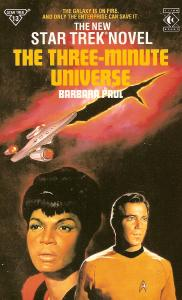

The Three-Minute Universe |
|  |
| AUT | Barbara Paul |
| PAG | 265 (Titan) |
| EDI | Pocket Books, 1988 Titan Books, 1988 |
| ISBN | 0-671-65816-6 (Pocket) 0-671-74358-9 (Pocket) 1-85286-068-5 (Titan) |
I Sackers. Il capitano Kirk non aveva mai incontrato,
in tutti i suoi viaggi, una razza più aborrita. La loro semplice presenza causa
fortissimi disturbi nella maggioranza dei membri della Federazione. Ora i Sackers hanno
compiuto un'azione la cui brutalità è paragonabile al loro aspetto: il furto di un
rivoluzionario apparecchio (e contemporaneamente lo sterminio di un'intera razza)
utilizzato per aprire una falla nel tessuto spazio-temporale. Attraverso quest'ultima, un
altro universo si sta riversando nel nostro, distruggendolo, a meno che l'equipaggio dell'Enterprise
non riesca a fermare il processo.